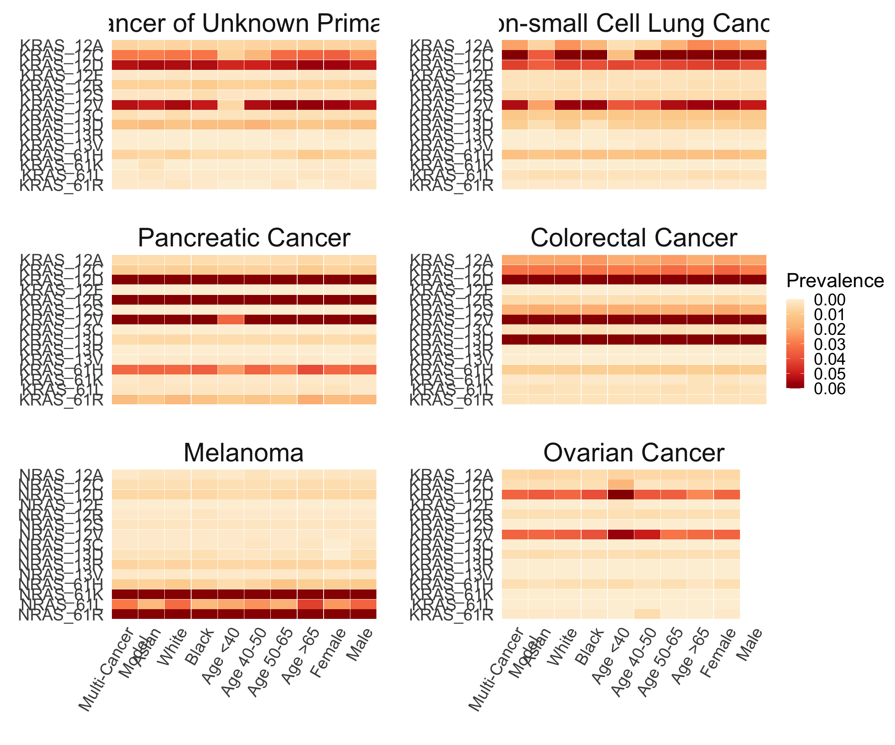
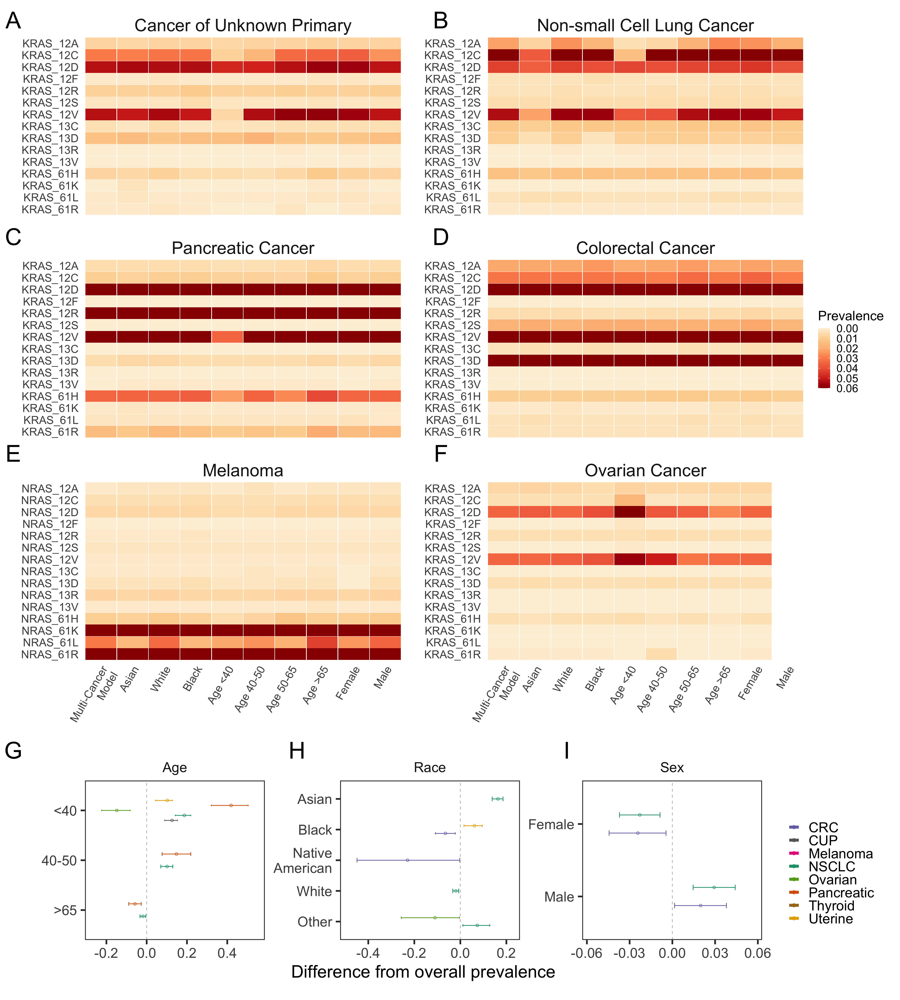

Last updated: 2022-08-20
Checks: 6 1
Knit directory: genie/
This reproducible R Markdown analysis was created with workflowr (version 1.7.0). The Checks tab describes the reproducibility checks that were applied when the results were created. The Past versions tab lists the development history.
Great! Since the R Markdown file has been committed to the Git repository, you know the exact version of the code that produced these results.
The global environment had objects present when the code in the R
Markdown file was run. These objects can affect the analysis in your R
Markdown file in unknown ways. For reproduciblity it’s best to always
run the code in an empty environment. Use wflow_publish or
wflow_build to ensure that the code is always run in an
empty environment.
The following objects were defined in the global environment when these results were created:
| Name | Class | Size |
|---|---|---|
| rv | list | 2.9 Kb |
The command set.seed(20220803) was run prior to running
the code in the R Markdown file. Setting a seed ensures that any results
that rely on randomness, e.g. subsampling or permutations, are
reproducible.
Great job! Recording the operating system, R version, and package versions is critical for reproducibility.
Nice! There were no cached chunks for this analysis, so you can be confident that you successfully produced the results during this run.
Great job! Using relative paths to the files within your workflowr project makes it easier to run your code on other machines.
Great! You are using Git for version control. Tracking code development and connecting the code version to the results is critical for reproducibility.
The results in this page were generated with repository version 540aa2c. See the Past versions tab to see a history of the changes made to the R Markdown and HTML files.
Note that you need to be careful to ensure that all relevant files for
the analysis have been committed to Git prior to generating the results
(you can use wflow_publish or
wflow_git_commit). workflowr only checks the R Markdown
file, but you know if there are other scripts or data files that it
depends on. Below is the status of the Git repository when the results
were generated:
Ignored files:
Ignored: .Rhistory
Ignored: todo.org
Unstaged changes:
Modified: public/table/co_mutation_nscc_allele.Rmd/any_mutation_(gene_pathways)_mutation_signature.csv
Modified: public/table/co_mutation_nscc_allele.Rmd/any_mutation_agecat.csv
Modified: public/table/co_mutation_nscc_allele.Rmd/any_mutation_mutation_signature.csv
Modified: public/table/co_mutation_nscc_allele.Rmd/any_mutation_race.csv
Modified: public/table/co_mutation_nscc_allele.Rmd/any_mutation_sample_type.csv
Modified: public/table/co_mutation_nscc_allele.Rmd/any_mutation_tmb.csv
Modified: public/table/co_mutation_nscc_allele.Rmd/cosmic_driver_mutation_(gene_pathways).csv
Modified: public/table/co_mutation_nscc_allele.Rmd/cosmic_driver_mutation_(gene_pathways)_sample_type.csv
Modified: public/table/co_mutation_nscc_allele.Rmd/cosmic_driver_mutation_(gene_pathways)_sex.csv
Modified: public/table/co_mutation_nscc_allele.Rmd/cosmic_driver_mutation_tmb.csv
Modified: public/table/co_mutation_nscc_allele.Rmd/inactivating_mutation_race.csv
Note that any generated files, e.g. HTML, png, CSS, etc., are not included in this status report because it is ok for generated content to have uncommitted changes.
These are the previous versions of the repository in which changes were
made to the R Markdown (analysis/fig2.Rmd) and HTML
(docs/fig2.html) files. If you’ve configured a remote Git
repository (see ?wflow_git_remote), click on the hyperlinks
in the table below to view the files as they were in that past version.
| File | Version | Author | Date | Message |
|---|---|---|---|---|
| Rmd | 2fda1f3 | rscharpf | 2022-08-18 | Initialize RAS reproducibility workflowr |
| html | 2fda1f3 | rscharpf | 2022-08-18 | Initialize RAS reproducibility workflowr |
library(grid)
library(gridExtra)
library(magrittr)
library(here)
library(tidyverse)
library(RColorBrewer)
library(cowplot)prev.dir <- here("public", "table", "ras_amino_acid_prev.Rmd")
age <- read_csv(file.path(prev.dir, "age.csv"))
race <- read_csv(file.path(prev.dir, "race.csv"))
sex <- read_csv(file.path(prev.dir, "sex.csv"))
multi <- read_csv(file.path(prev.dir, "multicancer.csv"))
age <- age %>%
subset(.,!is.na( variable)) %>%
mutate(variable = paste0("Age ", variable))
race <- race %>%
subset(.,variable %in% c("Asian", "White","Black"))
sex = sex %>%
mutate(variable = recode( variable, "Male" = "male", "Female" = "female"))
multi <- multi %>%
mutate(variable = "Multi-Cancer\nmodel")
plot.prev <- rbind(age, sex, race, multi)cancers <- c("cancer of unknown primary",
"non-small cell lung cancer",
"pancreatic cancer",
"colorectal cancer",
"melanoma", "ovarian cancer")
plot.df <- plot.prev %>%
filter(hugo_symbol == "KRAS",
cancer %in% cancers) %>%
filter(cancer != "melanoma")
variable.levels = c("Multi-Cancer\nmodel", "Asian", "White",
"Black", "Age <40" , "Age 40-50" ,
"Age 50-65" , "Age >65" , "female", "male")
## For melanoma, we want the NRAS prevalence
melanoma <- plot.prev %>%
filter(hugo_symbol == "NRAS",
cancer == "melanoma")
dat <- bind_rows(plot.df, melanoma)
ras.levels <- rev(unique(dat$ras))
dat$ras <- factor(dat$ras, levels = ras.levels)
dat$variable <- factor(dat$variable, levels = variable.levels)clabs <- c("Cancer of Unknown Primary",
"Non-small Cell Lung Cancer",
"Pancreatic Cancer",
"Colorectal Cancer",
"Melanoma",
"Ovarian Cancer") %>%
setNames(cancers)
vlabs <- setNames(str_to_title(variable.levels),
variable.levels)
fig2a <- dat %>%
filter(cancer %in% cancers) %>%
##!(cancer == "ovarian cancer" & variable == "male")) %>%
mutate(variable=factor(vlabs[variable], vlabs),
cancer=factor(cancer, level=cancers),
median=ifelse(median > 0.06, 0.06, median)) %>%
ggplot(aes(variable, ras)) +
geom_tile(fill = '#ffffff', color = '#ffffff',
width = 0.98,
height = 0.98,
size = 0.98) +
theme_minimal() +
geom_tile(aes(fill = median),
size = 0.98,
width = 0.98,
height= 0.98) +
scale_fill_distiller(palette = 'OrRd',
name = 'Prevalence',
guide = guide_colorbar(direction = "vertical"),
trans = "reverse") +
theme(axis.ticks.x = element_blank(),
axis.text.x = element_text(size = 16,
angle = 60,
vjust = 1,
hjust=1),
axis.text.y = element_text(size = 16, angle = 0),
panel.grid = element_blank(),
title = element_text(size = 10),
strip.background = element_blank(),
strip.text=element_text(size=25),
legend.title=element_text(size=19),
legend.text=element_text(size=16),
panel.spacing=unit(2, "lines")) +
ylab("") + xlab("") +
facet_wrap(~cancer, ncol=2,
labeller=labeller(cancer=clabs),
scales="free_y")
fig2a
| Version | Author | Date |
|---|---|---|
| 2fda1f3 | rscharpf | 2022-08-18 |
here <- here::here
models <- here("output",
"prevalence",
"summarize_models.R",
"models.rds") %>%
readRDS()
##codons_ <- c("Codon 12", "Codon 13", "Codon G12C")
codons_ <- "Codon 12"
overall <- models %>%
filter(cancer_group=="multi",
hugo_symbol=="KRAS") %>%
unnest("data") %>%
ungroup() %>%
filter(codon %in% codons_) %>%
select(-c(variable, mean,
cancer_group, confounder,
hugo_symbol, codon_range,
ras)) %>%
rename(overall_y=y,
overall_n=n,
overall_median=median,
overall_q1=q1,
overall_q2=q2)
stratified <- models %>%
filter(confounder %in% c("Center", "Race", "Sex", "Age"),
hugo_symbol=="KRAS") %>%
unnest("data") %>%
ungroup() %>%
filter(codon %in% codons_) %>%
select(-c(cancer_group, codon_range, ras))
merged <- stratified %>%
left_join(overall, by=c("cancer", "codon"))## conservatively, highlight differences with non-overlapping credible intervals
diff_posterior <- function(y, n, overall_y, overall_n){
y1 <- y
n1 <- n
y2 <- overall_y
n2 <- overall_n
p1 <- rbeta(50e3, y1+0.5, n1-y1+0.5)
p2 <- rbeta(50e3, y2+0.5, n2-y2+0.5)
d <- p2-p1
quantile(d, c(0.025, 0.5, 0.975))
}
diffoverall <- merged %>%
select(y, n, overall_y, overall_n) %>%
pmap_dfr(diff_posterior) %>%
bind_cols(merged) %>%
filter(`97.5%` < 0 | `2.5%` > 0)
colors <- readRDS(here("output", "co-mutation",
"summarize_models.R",
"colors.rds"))
cols2 <- cols <- setNames(colors$color, colors$cancer)
diffoverall <- filter(diffoverall,
cancer %in% names(cols))For each row in diffoverall, find the posterior
distribution for the difference in probabilties between the subgroup and
the overall.
cancerlabs <- read_csv(here("data", "cancer_labels.csv"))Rows: 51 Columns: 2
── Column specification ────────────────────────────────────────────────────────
Delimiter: ","
chr (2): cancer, cancer_label
ℹ Use `spec()` to retrieve the full column specification for this data.
ℹ Specify the column types or set `show_col_types = FALSE` to quiet this message.d <- diffoverall
d2 <- filter(d,
confounder %in% c("Race", "Sex", "Age"),
variable != "NA") %>%
mutate(variable=droplevels(variable))
vlevels <- c("<40", "40-50", ">65",
"Asian", "Black",
"Native American", "White", "Other",
"Female", "Male")
vlabels <- str_replace(vlevels, "Native American", "Native\nAmerican") %>%
setNames(vlevels)
cols3 <- tibble(color=cols2, cancer=names(cols2)) %>%
left_join(cancerlabs, by="cancer") %>%
mutate(cancer=cancer_label) %>%
arrange(cancer)
cols4 <- setNames(cols3$color, cols3$cancer)
all <- d2 %>%
left_join(cancerlabs, by="cancer") %>%
mutate(cancer=cancer_label,
cancer=factor(cancer, sort(unique(cancer)))) %>%
mutate(variable=as.character(variable),
var2=vlabels[variable],
var2=factor(var2, vlabels),
var2=fct_rev(var2)) %>%
ggplot(aes(x=`50%`, var2, group=cancer)) +
geom_errorbarh(aes(xmin=`2.5%`, xmax=`97.5%`, color=cancer),
position=position_dodge(width=0.5),
height=0.15) +
geom_point(shape=21,
position=position_dodge(width=0.5),
aes(color=cancer)) +
theme_bw(base_size=25) +
scale_color_manual(values=cols4) +
scale_x_continuous(expand=expansion(add=0.01, mult=0.1)) +
theme(strip.background=element_blank(),
panel.grid=element_blank()) +
ylab("") +
xlab("Difference from overall prevalence") +
geom_vline(xintercept=0, color="gray", linetype="dashed") +
facet_wrap(~confounder, scales="free") +
guides(color=guide_legend(title="",
override.aes=list(size=2)))
##leg <- cowplot::get_legend(all)
##all2 <- all + guides(color="none")
center <- d %>%
filter(confounder=="Center") %>%
mutate(variable=fct_rev(variable)) %>%
ggplot(aes(x=`50%`, variable, group=cancer)) +
geom_errorbarh(aes(xmin=`2.5%`, xmax=`97.5%`, color=cancer),
position=position_dodge(width=0.5),
height=0.15) +
geom_point(shape=21, position=position_dodge(width=0.5),
aes(color=cancer)) +
theme_bw(base_size=15) +
scale_color_manual(values=cols2) +
theme(strip.background=element_blank(),
panel.grid=element_blank()) +
ylab("") +
xlab("Difference from overall prevalence") +
geom_vline(xintercept=0, color="gray", linetype="dashed") +
guides(color="none")A <- ggplotGrob(fig2a)
gl <- list(A,
ggplotGrob(all))
vp <- viewport(width=unit(0.98, "npc"),
height=unit(0.98, "npc"))
pushViewport(vp)
grid.arrange(grobs=gl,
##width=c(1, 1, 1, 0.2),
heights=c(3, 1),
newpage=FALSE)
upViewport()
cex <- 2.8
x1 <- unit(rep(0.015, 4), "npc")
y1 <- unit(seq(0.98, 0.33, length.out=4), "npc")
y1[4] <- unit(0.25, "npc")
x2 <- unit(rep(0.49, 3), "npc")
grid.text(LETTERS[seq(1, 9, 2)],
x=x1, y=y1,
gp=gpar(cex=cex))
grid.text(LETTERS[seq(2, 6, 2)],
x=x2, y=y1[1:3],
gp=gpar(cex=cex))
grid.text("H", x=unit(0.33, "npc"), y=y1[4],
gp=gpar(cex=cex))
grid.text("I", x=unit(0.63, "npc"), y=y1[4],
gp=gpar(cex=cex))
| Version | Author | Date |
|---|---|---|
| 2fda1f3 | rscharpf | 2022-08-18 |
sessionInfo()R version 4.2.1 (2022-06-23)
Platform: x86_64-apple-darwin21.5.0 (64-bit)
Running under: macOS Monterey 12.5.1
Matrix products: default
BLAS: /usr/local/Cellar/openblas/0.3.20/lib/libopenblasp-r0.3.20.dylib
LAPACK: /usr/local/Cellar/r/4.2.1/lib/R/lib/libRlapack.dylib
locale:
[1] en_US.UTF-8/en_US.UTF-8/en_US.UTF-8/C/en_US.UTF-8/en_US.UTF-8
attached base packages:
[1] grid stats graphics grDevices utils datasets methods
[8] base
other attached packages:
[1] cowplot_1.1.1 RColorBrewer_1.1-3 forcats_0.5.1 stringr_1.4.0
[5] dplyr_1.0.9 purrr_0.3.4 readr_2.1.2 tidyr_1.2.0
[9] tibble_3.1.8 ggplot2_3.3.6 tidyverse_1.3.2 here_1.0.1
[13] magrittr_2.0.3 gridExtra_2.3 workflowr_1.7.0
loaded via a namespace (and not attached):
[1] httr_1.4.3 sass_0.4.2 bit64_4.0.5
[4] vroom_1.5.7 jsonlite_1.8.0 modelr_0.1.8
[7] bslib_0.4.0 assertthat_0.2.1 getPass_0.2-2
[10] highr_0.9 googlesheets4_1.0.1 cellranger_1.1.0
[13] yaml_2.3.5 pillar_1.8.0 backports_1.4.1
[16] glue_1.6.2 digest_0.6.29 promises_1.2.0.1
[19] rvest_1.0.2 colorspace_2.0-3 htmltools_0.5.3
[22] httpuv_1.6.5 pkgconfig_2.0.3 broom_1.0.0
[25] haven_2.5.0 scales_1.2.0 processx_3.7.0
[28] whisker_0.4 later_1.3.0 tzdb_0.3.0
[31] git2r_0.30.1 googledrive_2.0.0 farver_2.1.1
[34] generics_0.1.3 ellipsis_0.3.2 cachem_1.0.6
[37] withr_2.5.0 cli_3.3.0 crayon_1.5.1
[40] readxl_1.4.0 evaluate_0.16 ps_1.7.1
[43] fs_1.5.2 fansi_1.0.3 xml2_1.3.3
[46] tools_4.2.1 hms_1.1.1 gargle_1.2.0
[49] lifecycle_1.0.1 munsell_0.5.0 reprex_2.0.1
[52] callr_3.7.1 compiler_4.2.1 jquerylib_0.1.4
[55] rlang_1.0.4 rstudioapi_0.13 labeling_0.4.2
[58] rmarkdown_2.14 gtable_0.3.0 DBI_1.1.3
[61] R6_2.5.1 lubridate_1.8.0 knitr_1.39
[64] bit_4.0.4 fastmap_1.1.0 utf8_1.2.2
[67] rprojroot_2.0.3 stringi_1.7.8 parallel_4.2.1
[70] Rcpp_1.0.9 vctrs_0.4.1 dbplyr_2.2.1
[73] tidyselect_1.1.2 xfun_0.32